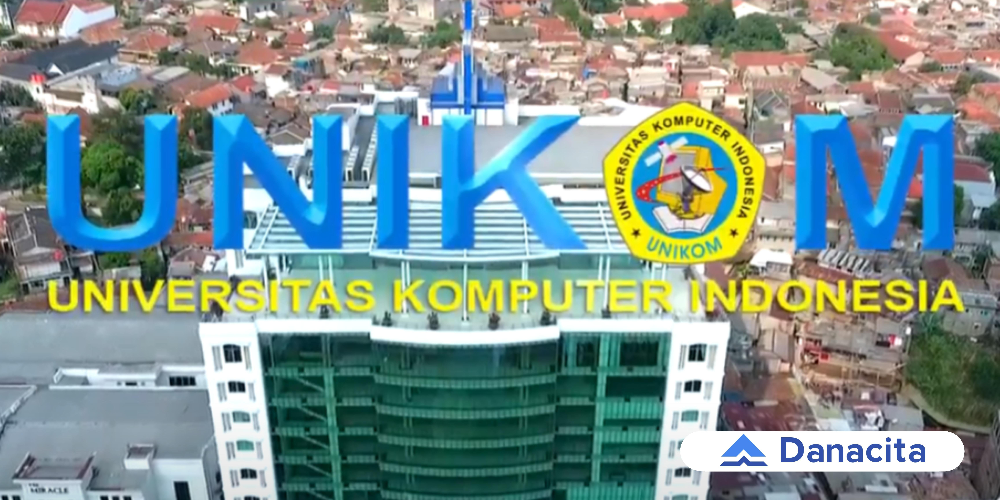
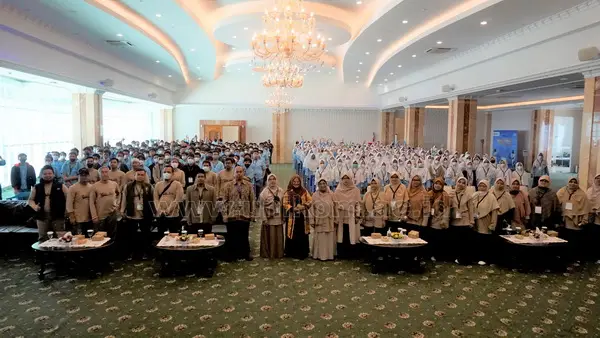

perusahaan ini merupakan perusahaan Digital Agency yang berfokus pada Branding, Design, Web Development dan Social Media Management.
setelah berkunjung dari PT Chlorine,sekarang Smk informatika al-irsyad kota cirebon mengunjungi salah satu kampu ternama di bandung yaitu UNIKOM
Universitas Komputer Indonesia (UNIKOM) secara resmi berdiri pada hari Selasa, tanggal 8 Agustus 2000 berdasarkan Surat Keputusan Menteri Pendidikan Nasional nomor 126/D/0/2000.
disini para siswa dan siswi mendengarkan apa yang di sampaikan oleh pengurus kampus tersebu dan adapun manfaatnya di antara berikut:
